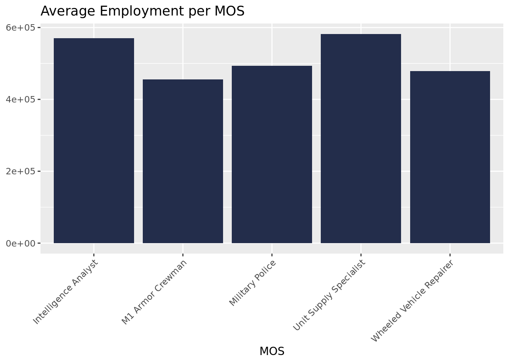
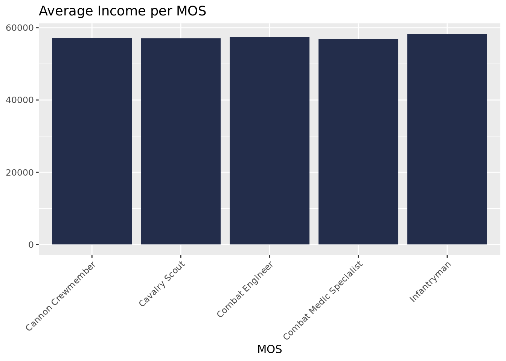
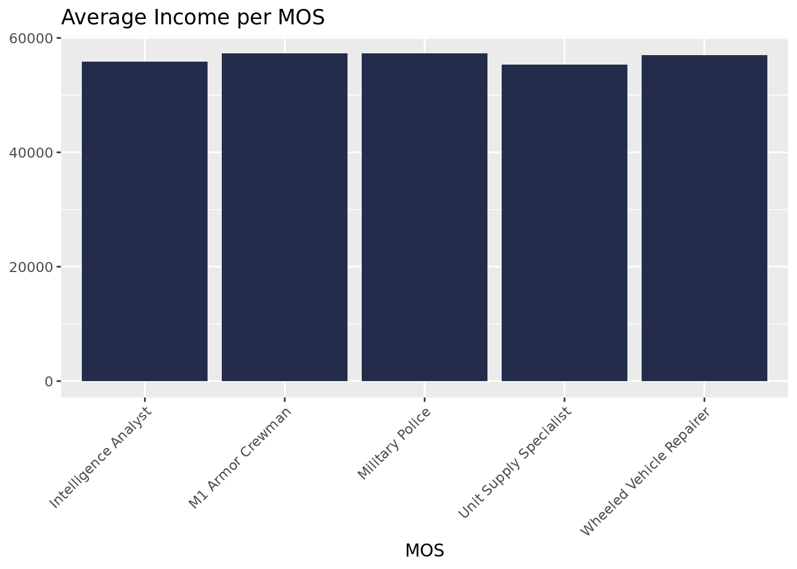
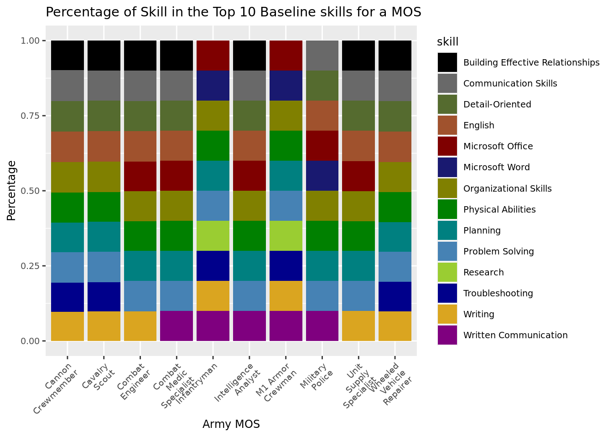
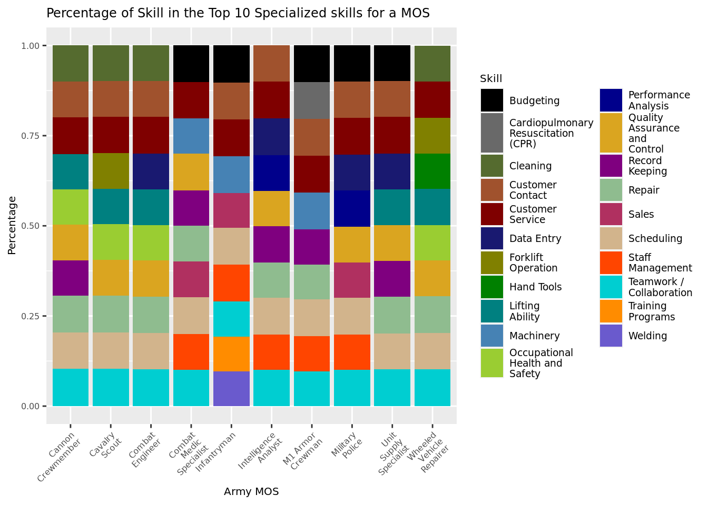

All Skills
Exploratory Data Analysis
| Statistic | N | Mean | St. Dev. | Min | Pctl(25) | Pctl(75) | Max |
| Employment | 170 | 185,950.900 | 431,133.200 | 160 | 20,342.5 | 146,895 | 4,317,950 |
| Salary | 170 | 51,009.410 | 15,686.110 | 25,510 | 39,335 | 59,167.5 | 120,140 |
All Skills

Many of the top skills are also the top baseline skills (communication skills, physical ability, organizational skills, detail-oriented, English), indicating the importance of many of these baseline skills.
Specialized Skills

The top 5 specialized skills for each MOS are approximately the same once weighted by employment.
Software Skills

SAP is a business software, and combined with the presence of Salesforce and ERP, indicates a demand for software centered around commerce.
The top 5 software skills are also the same for each MOS, and reflect the top software skills overall.
Unique Skills
Unique skills are defined as skills that aren't seen across all 10 MOS, although the most common unique skills--digital signal processing, game development, cutting in and creative writing are seen across 9 of the 10 MOS.
Employment by MOS (1)
Employment by MOS (2)

Based on BLS data on projected employment for jobs, the average predicted employment for each MOS was taken based on their skills. The highest average employment predicted was for combat medic specialists, intelligence analysts and unit supply specialists while the lowest were for M1 Armor Crewmen and Infantrymen.
Salary by MOS (1)

Salary by MOS (2)

Based on the salary for each MOS based on their skill, the average salary for jobs acquired by soldiers once leaving the army based on their skills is consistant across MOS.
Baseline Skill Top 10 Percentages

Specialized Skills Top 10 Percentages

Software Skills Top 10 Percentages
Networks
All skills network
linking MOS and SOC codes